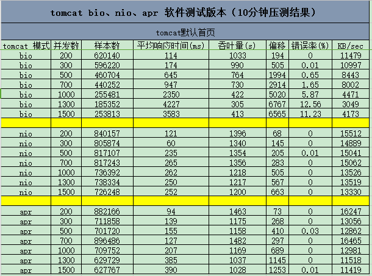
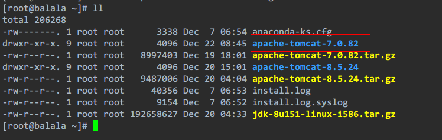
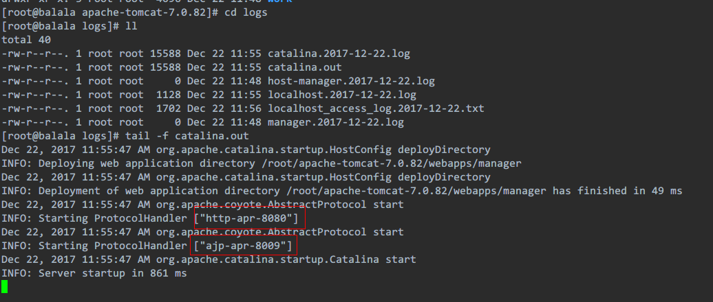

一、BIO、NIO、AIO
先了解四个概念
同步： 自己亲自出马持银行卡到银行取钱（使用同步IO时，Java自己处理IO读写）。
异步： 委托一小弟拿银行卡到银行取钱，然后给你（使用异步IO时，Java将IO读写委托给OS处理，需要将数据缓冲区地址和大小传给OS(银行卡和密码)，OS需要支持异步IO操作API）。
阻塞： ATM排队取款，你只能等待（使用阻塞IO时，Java调用会一直阻塞到读写完成才返回）。
非阻塞：柜台取款，取个号，然后坐在椅子上做其它事，等号广播会通知你办理，没到号你就不能去，你可以不断问大堂经理排到了没有，大堂经理如果说还没到你就不能去（使用非阻塞IO时，如果不能读写Java调用会马上返回，当IO事件分发器会通知可读写时再继续进行读写，不断循环直到读写完成）。
Java对BIO、NIO、AIO的支持
Java BIO： 同步并阻塞，服务器实现模式为一个连接一个线程，即客户端有连接请求时服务器端就需要启动一个线程进行处理，如果这个连接不做任何事情会造成不必要的线程开销，当然可以通过线程池机制改善。
Java NIO： 同步非阻塞，服务器实现模式为一个请求一个线程，即客户端发送的连接请求都会注册到多路复用器上，多路复用器轮询到连接有I/O请求时才启动一个线程进行处理。
Java AIO(NIO.2)： 异步非阻塞，服务器实现模式为一个有效请求一个线程，客户端的I/O请求都是由OS先完成了再通知服务器应用去启动线程进行处理
BIO、NIO、AIO适用场景分析
BIO方式适用于连接数目比较小且固定的架构，这种方式对服务器资源要求比较高，并发局限于应用中，JDK1.4以前的唯一选择，但程序直观简单易理解。
NIO方式适用于连接数目多且连接比较短（轻操作）的架构，比如聊天服务器，并发局限于应用中，编程比较复杂，JDK1.4开始支持。
AIO方式使用于连接数目多且连接比较长（重操作）的架构，比如相册服务器，充分调用OS参与并发操作，编程比较复杂，JDK7开始支持。
二、tomcat三种模式简介
BIO
BIO(blocking I/O)，顾名思义，即阻塞式I/O操作，表示Tomcat使用的是传统的Java I/O操作(即java.io包及其子包)。Tomcat在默认情况下，就是以bio模式运行的。遗憾的是，就一般而言，bio模式是三种运行模式中性能最低的一种。我们可以通过Tomcat Manager来查看服务器的当前状态。
NIO
是Java SE 1.4及后续版本提供的一种新的I/O操作方式(即java.nio包及其子包)。Java nio是一个基于缓冲区、并能提供非阻塞I/O操作的Java API，因此nio也被看成是non-blocking I/O的缩写。它拥有比传统I/O操作(bio)更好的并发运行性能。
APR
(Apache Portable Runtime/Apache可移植运行库)，是Apache HTTP服务器的支持库。你可以简单地理解为，Tomcat将以JNI的形式调用Apache HTTP服务器的核心动态链接库来处理文件读取或网络传输操作，从而大大地提高Tomcat对静态文件的处理性能。 Tomcat apr也是在Tomcat上运行高并发应用的首选模式。
三、tomcat三种模式性能比较
这里我引用了网友给出的测试结果

四、tomcat模式设置
我这里演示的是tomcat7，默认是BIO模式的。而tomcat8是默认NIO模式的。

BIO模式
tomcat7默认就是。如果你是tomcat8或9想设置成BIO模式的，那么在tomcat目录里的conf目录里的server.xml文件中修改。找到设置端口号8080的那个标签，主要是修改protocol属性为HTTP/1.1，重启tomcat就会使用BIO模式。tomcat7默认就是这个样子的
1 | <Connector port="8080" protocol="HTTP/1.1" |
NIO模式
在和设置BIO模式同样的位置上，修改protocol属性为org.apache.coyote.http11.Http11NioProtocol，重启tomcat就会使用NIO模式。tomcat8以上默认就是这个样子的
1 | <Connector port="8080" protocol="org.apache.coyote.http11.Http11NioProtocol" |
APR模式
启用这种模式稍微麻烦一些，除了需要改配置文件，还需要安装一些依赖库，以下就是安装所需的条件：
1. 最新的apr
2. 最新的apr-util
3. tomcat-native.tar.gz(在tomcat/bin/下有相应的安装tar包)
前两个依赖库的官方下载地址：http://apr.apache.org/download.cgi
先改配置文件，和改BIO,NIO模式的位置一样，修改protocol属性为org.apache.coyote.http11.Http11AprProtocol，注意和NIO的很像，但不一样
1 | <Connector port="8080" protocol="org.apache.coyote.http11.Http11AprProtocol" |
现在先安装apr，在解压好的apr目录下，执行下面的命令，指定apr安装目录：
1 | ./configure --prefix=/usr/local/apr && make && make install |
再安装apr-util，在解压好的apr-util目录下，执行下面的命令，指定apr目录和apr-util安装目录：
1 | ./configure --with-apr=/usr/local/apr/ --prefix=/usr/local/apr-util && make && make install |
再安装tomcat-native，这个不用下载，在tomcat/bin/下有相应的安装tar包，在解压好的tomcat-native目录下，执行下面的命令，指定指定apr目录和JAVA_HOME目录：
1 | ./native/configure --with-apr=/usr/local/apr --with-java-home=/usr/share/jdk1.8 && make && make install |
安装完后记得在 /etc/profile 文件中的JAVA_HOME环境变量后面多加一条APR的环境变量（注意你自己安装的apr目录）
1 | export LD_LIBRARY_PATH=$LD_LIBRARY_PATH:/usr/local/apr/lib |
用source /etc/profile命令让环境变量配置立即生效，启动tomcat，就是APR模式了
五、如何确定自己当前的模式
启动tomcat后，可以在tomcat/logs目录下，执行如下命令：
1 | tail -f catalina.out |
我这里就是成功启动APR模式后显示的样子
